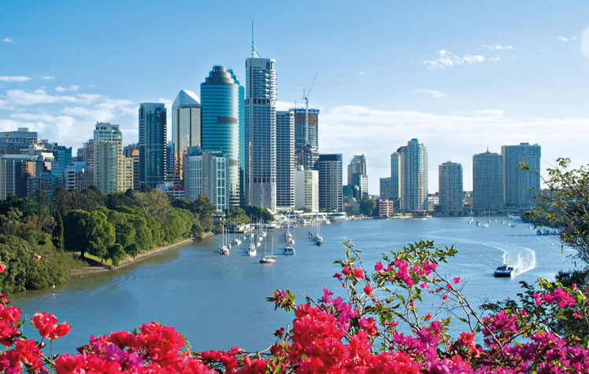

Brisbane CBD overview
Live Entertainment
Story Bridge
| Year | Details |
| 1940 |
The Story Bridge is a heritage-liste steel cantilever bridge spanning the Brisbane River that carries vehicular, bicycle and pedestrian traffic between the northern and the southern suburbs of Brisbane, Queensland, Australia. |
Botanic Gardens
| Year | Details |
| 1855 |
The City Botanic Gardens is a botanical garden in Brisbane, Australia. It is located on Gardens Point in the Brisbane CBD and is bordered by the Brisbane River, Alice Street, George Street, Parliament House and QUT's Gardens Point campus. |
Must Try in Brisbane
Major Attactions
There is no shortage of major attractions to visit and explore in Brisbane. Across the river from the CBD, South Bank is home to our Cultural Centre with the world-class galleries and entertainment. Besides the big cultural attractions, Brisbane has two major sports stadiums, Alma Park Zoo, Lone Pine Koala Sanctuary and the Story Bridge to climb.
Brisbane River
If you’re up for something more adventurous, make the Brisbane River your playground. Rock climb at Kangaroo Point, kayak down the river and roller blade through South Bank – Riverlife is a fantastic way to experience Brisbane from a different angle
Lone Pine Koala Sanctuary
Officially recognised by the Guinness Book of World Records, Lone Pine Koala Sanctuary is the world's first and largest koala sanctuary, with 80 years of experience and over 130 koalas.Hand-feed kangaroos and wild lorikeets, or get cuddly with a beautiful koala.